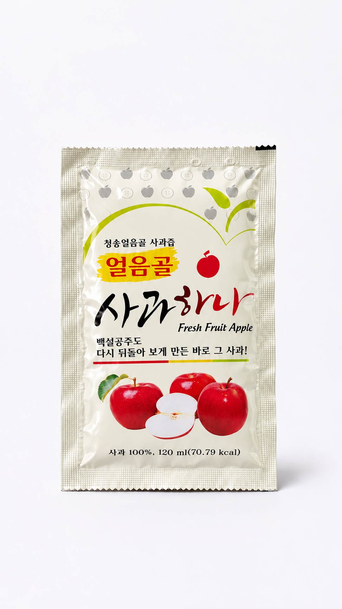
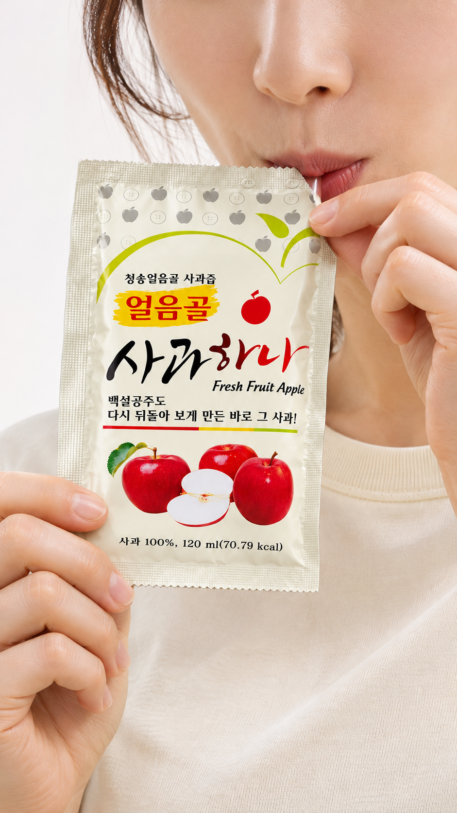
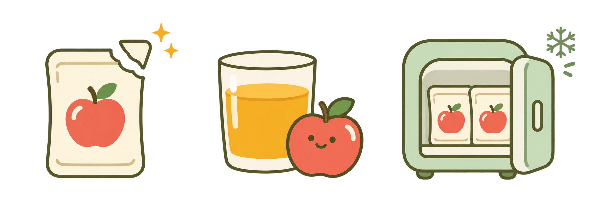
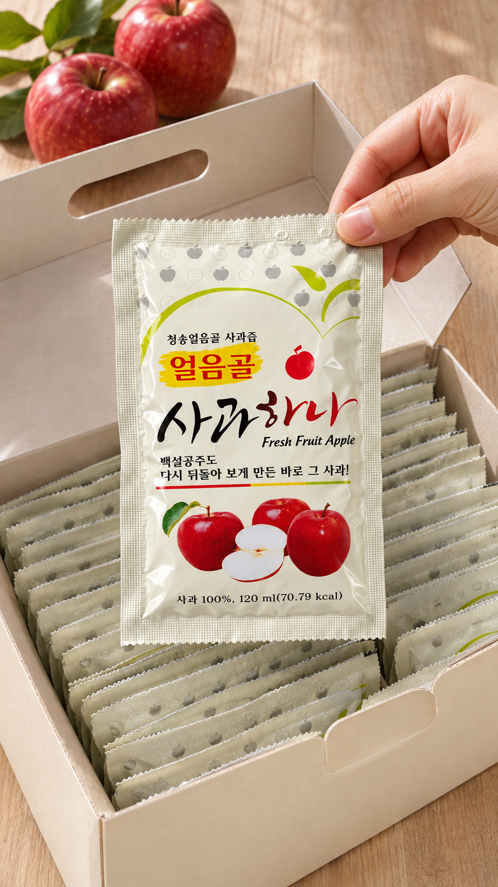

판매자 검토용 시안 · 상품정보·인증서 확인 전
삼형제농원
청송사과즙
한 포로 가볍게.

120ml × 50포
29,900원무료배송
국내산 청송군 사과 100%
제품 연출 이미지
뜯고, 마시고.
뜯어서,
바로 한 모금.

AI 모델 연출 이미지
취향대로 간편하게
이렇게 드세요

뜯어서 한 모금
가볍게 꺼내 마셔요
컵에 따라
식탁 위에서도 간편하게
차갑게
시원하게 즐기고 싶을 때
보관방법은 완제품 표시를 확인하고, 개봉 후에는 바로 드세요.
만드는 과정
씻고, 짜고,
한 포씩 담습니다.
사과즙이 파우치에 담기기까지,
네 단계로 쉽게 살펴보세요.
01
사과 세척
사과를 깨끗하게 씻어요.
02
착즙
씻은 사과에서 즙을 짜요.
03
파우치 충전
한 포씩 담고 밀봉해요.
04
박스 포장
50포 구성으로 담아요.
공정 이해를 돕는 설명도입니다. 실제 제조 현장 사진은 별도 확인 후 반영합니다.
세부 공정·조건은 제조원 자료 확인 후 확정합니다.
한 박스 구성
한 포는 간편하게,
한 박스는 넉넉하게.
120ml
한 포
50포
한 박스
6L
총 용량

AI 연출 이미지 · 실제 박스 디자인과 포장 모습은 실사진으로 교체합니다.
인증 · 확인 자료
인증서도
함께 확인하세요.
공식 인증서가 들어갈 자리
인증명 · 사업장명 · 인증번호 · 유효기간
공식 인증서 보유는 판매자 전달 사항입니다. 인증명과 적용 범위는 자료 확인 중입니다.
HACCP 인증 여부는 아직 확정하지 않았으며, 확인 전 인증 마크를 표기하지 않습니다.
제품정보 · 주문 안내
주문 전에 확인하세요.
| 내용량 | 120ml × 50포 · 총 6L |
| 원재료 표기 | 국내산 청송군 사과 100% |
| 식품유형 | 과·채주스 |
| 제조원 기록 | 청송사과식품 · 최신 라벨 확인 예정 |
| 제조일·소비기한 | 현재 출고 파우치 각인 확인 후 기재 |
| 보관방법 | 완제품 표시 확인 · 개봉 후 바로 음용 |
영업일 낮 12시 전 주문 당일 발송 · 주문당 최대 3박스
기존 운영 결정 기준이며, 현재 실제 출고 일정 확인 후 확정합니다.
제주·도서 추가 배송비와 파손·불량 교환/환불 조건은 판매자 확인 후 반영합니다.